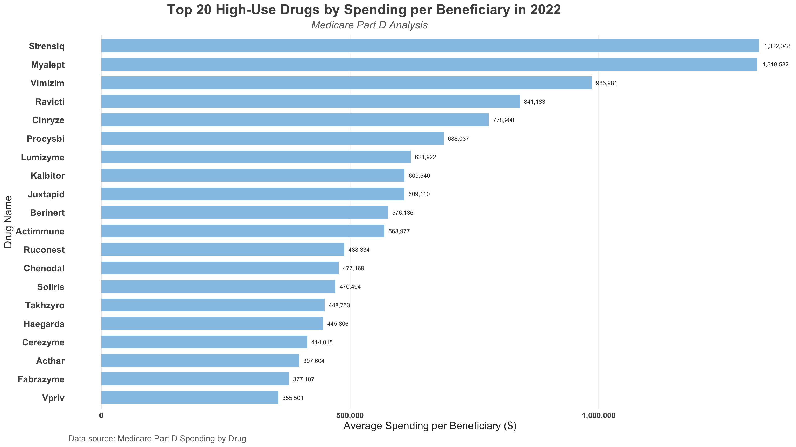
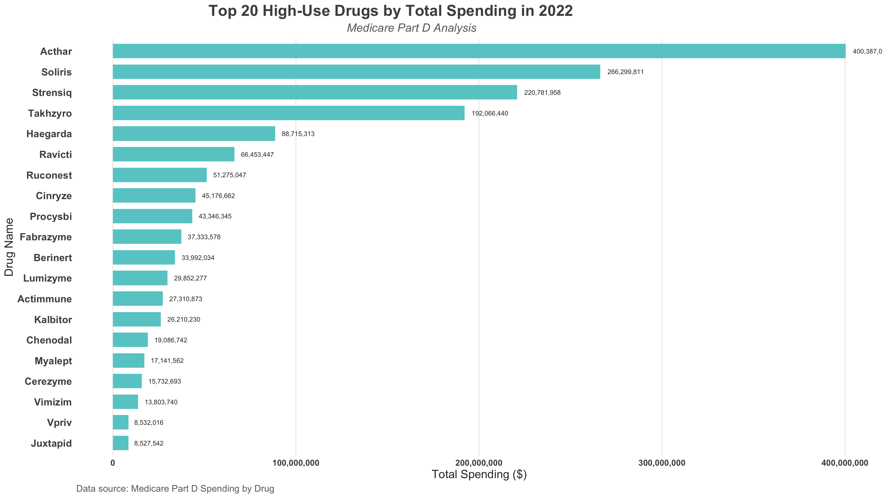
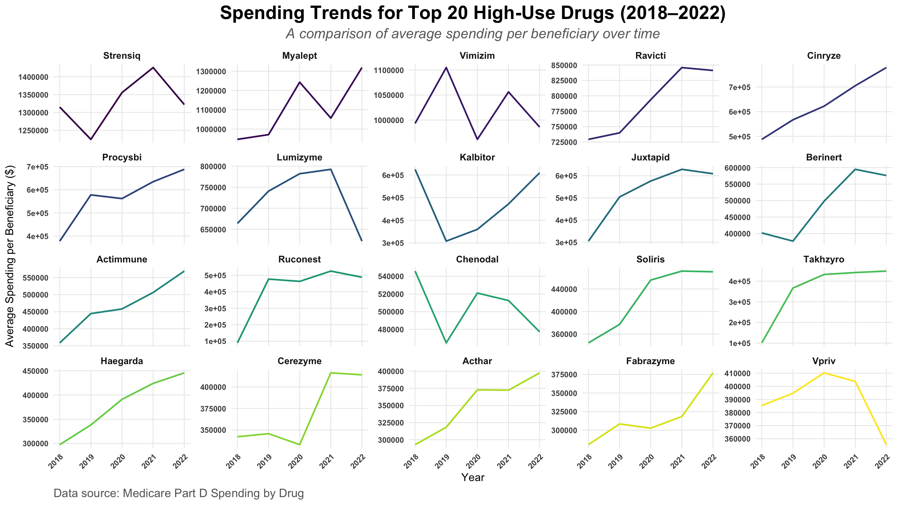
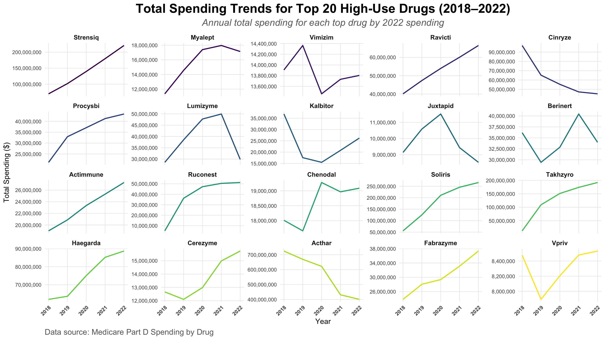

Beneficiary Burden by Top 20 High-Use Drugs and Spending Trends
This analysis investigates the beneficiary cost burden associated with Top 20 high-use drugs in Medicare Part D in 2022, as well as spending trends from 2018 to 2022. The data for this analysis comes from Centers for Medicare & Medicaid Services (2024).
Background 💊
Prescription drug spending constitutes a significant portion of healthcare costs, particularly within the Medicare Part D program, which provides prescription drug coverage to millions of beneficiaries in the United States. In recent years, rising expenditures on specialty drugs and high-use medications have highlighted the financial burden borne by both the healthcare system and individual beneficiaries. Understanding the cost distribution and trends among these high-use drugs is critical for developing strategies to enhance affordability and sustainability in prescription drug coverage(Hernandez, Good, and Gellad 2020).
Research Question and Audience ❓
Research Question : “What is the beneficiary cost burden for Top 20 high-use drugs in Medicare Part D in 2022, and how has spending on these drugs changed from 2018 to 2022?”
Audience : Healthcare policymakers, public health researchers, and Medicare program administrators concerned with cost burdens and the rising expenses of frequently prescribed drugs.
Medicare Part D data includes a series of datasets that provide information on prescription drugs prescribed by individual physicians and other healthcare professionals and paid for under the Medicare Part D Prescription Drug program. These datasets contain information on total number of prescriptions dispensed, and the total drug cost by National Provider Identifier (NPI), prescription drug, and geography(Jung C 2019).
Data Wrangling 🧹
To explore trends, I focused on high-use drugs and calculated key metrics:
library(tidyverse)
── Attaching core tidyverse packages ──────────────────────── tidyverse 2.0.0 ──
✔ dplyr 1.1.4 ✔ readr 2.1.5
✔ forcats 1.0.0 ✔ stringr 1.5.1
✔ ggplot2 3.5.1 ✔ tibble 3.2.1
✔ lubridate 1.9.3 ✔ tidyr 1.3.1
✔ purrr 1.0.2
── Conflicts ────────────────────────────────────────── tidyverse_conflicts() ──
✖ dplyr::filter() masks stats::filter()
✖ dplyr::lag() masks stats::lag()
ℹ Use the conflicted package (<http://conflicted.r-lib.org/>) to force all conflicts to become errors
Rows: 13889 Columns: 46
── Column specification ────────────────────────────────────────────────────────
Delimiter: ","
chr (3): Brnd_Name, Gnrc_Name, Mftr_Name
dbl (43): Tot_Mftr, Tot_Spndng_2018, Tot_Dsg_Unts_2018, Tot_Clms_2018, Tot_B...
ℹ Use `spec()` to retrieve the full column specification for this data.
ℹ Specify the column types or set `show_col_types = FALSE` to quiet this message.
ggplot(top20_drugs, aes(x =reorder(Brnd_Name, Avg_Spnd_Per_Bene_2022), y = Avg_Spnd_Per_Bene_2022)) +geom_bar(stat ="identity", fill ="#96c5e6", width =0.7) +geom_text(aes(label = scales::comma(Avg_Spnd_Per_Bene_2022)), hjust =-0.2, color ="#333333", size =3) +coord_flip() +labs(title ="Top 20 High-Use Drugs by Spending per Beneficiary in 2022",subtitle ="Medicare Part D Analysis",x ="Drug Name",y ="Average Spending per Beneficiary ($)",caption ="Data source: Medicare Part D Spending by Drug") +theme_minimal(base_size =12) +theme(plot.title =element_text(size =20, face ="bold", hjust =0.3, color ="#4E4E4E"), plot.subtitle =element_text(size =15, face ="italic", hjust =0.4, color ="#6B6B6B"), axis.text.y =element_text(size =13, face ="bold", color ="#4E4E4E"), axis.text.x =element_text(size =11, face ="bold", color ="#4E4E4E"), axis.title =element_text(size =15, color ="#333333"), panel.grid.major.y =element_blank(), panel.grid.minor =element_blank(), panel.grid.major.x =element_line(color ="#eaeaea", linewidth =0.5), plot.caption =element_text(size =12, color ="#6B6B6B", hjust =0) ) +scale_y_continuous(labels = scales::comma)

ggplot(top20_drugs, aes(x =reorder(Brnd_Name, Tot_Spndng_2022), y = Tot_Spndng_2022)) +geom_col(fill ="#66cccc", width =0.7) +geom_text(aes(label = scales::comma(Tot_Spndng_2022)), hjust =-0.2, color ="#333333", size =3) +coord_flip() +labs(title ="Top 20 High-Use Drugs by Total Spending in 2022",subtitle ="Medicare Part D Analysis",x ="Drug Name",y ="Total Spending ($)",caption ="Data source: Medicare Part D Spending by Drug") +theme_minimal(base_size =12) +theme(plot.title =element_text(size =20, face ="bold", hjust =0.3, color ="#4E4E4E"), plot.subtitle =element_text(size =15, face ="italic", hjust =0.4, color ="#6B6B6B"), axis.text.y =element_text(size =13, face ="bold", color ="#4E4E4E"), axis.text.x =element_text(size =11, face ="bold", color ="#4E4E4E"), axis.title =element_text(size =15, color ="#333333"), panel.grid.major.y =element_blank(), panel.grid.minor =element_blank(), panel.grid.major.x =element_line(color ="#eaeaea", linewidth =0.5), plot.caption =element_text(size =12, color ="#6B6B6B", hjust =0) ) +scale_y_continuous(labels = scales::comma)

trend_data <- top20_drugs %>%select(Brnd_Name, Avg_Spnd_Per_Bene_2018, Avg_Spnd_Per_Bene_2019, Avg_Spnd_Per_Bene_2020, Avg_Spnd_Per_Bene_2021, Avg_Spnd_Per_Bene_2022) %>%pivot_longer(cols =starts_with("Avg_Spnd_Per_Bene_"),names_to ="Year",names_prefix ="Avg_Spnd_Per_Bene_",values_to ="Average_Spending") %>%mutate(Year =as.numeric(Year),Brnd_Name =factor(Brnd_Name, levels = top20_drugs$Brnd_Name)) ggplot(trend_data, aes(x = Year, y = Average_Spending, color = Brnd_Name)) +geom_line(linewidth =1) +facet_wrap(~ Brnd_Name, scales ="free_y") +labs(title ="Spending Trends for Top 20 High-Use Drugs (2018–2022)",subtitle ="A comparison of average spending per beneficiary over time",x ="Year",y ="Average Spending per Beneficiary ($)",caption ="Data source: Medicare Part D Spending by Drug") +theme_minimal(base_size =14) +theme(legend.position ="none", plot.title =element_text(size =24, face ="bold", hjust =0.5), plot.subtitle =element_text(size =18, face ="italic", hjust =0.5, color ="#6B6B6B"), plot.caption =element_text(size =15, color ="#666666", hjust =0), axis.text.x =element_text(size =10, face ="bold", angle =45, hjust =1), axis.text.y =element_text(size =10, face ="bold"), strip.text =element_text(size =12, face ="bold"), panel.grid.major =element_line(color ="#eaeaea", linewidth =0.5), panel.grid.minor =element_blank() ) +scale_color_viridis_d()

trend_total_spending <- top20_drugs %>%select(Brnd_Name, Tot_Spndng_2018, Tot_Spndng_2019, Tot_Spndng_2020, Tot_Spndng_2021, Tot_Spndng_2022) %>%pivot_longer(cols =starts_with("Tot_Spndng_"),names_to ="Year",names_prefix ="Tot_Spndng_",values_to ="Total_Spending") %>%mutate(Year =as.numeric(Year),Brnd_Name =factor(Brnd_Name, levels = top20_drugs$Brnd_Name))ggplot(trend_total_spending, aes(x = Year, y = Total_Spending, color = Brnd_Name)) +geom_line(linewidth =1) +facet_wrap(~ Brnd_Name, scales ="free_y") +labs(title ="Total Spending Trends for Top 20 High-Use Drugs (2018–2022)",subtitle ="Annual total spending for each top drug by 2022 spending",x ="Year",y ="Total Spending ($)",caption ="Data source: Medicare Part D Spending by Drug") +theme_minimal(base_size =14) +theme(legend.position ="none", plot.title =element_text(size =24, face ="bold", hjust =0.5),plot.subtitle =element_text(size =18, face ="italic", hjust =0.5, color ="#6B6B6B"),plot.caption =element_text(size =15, color ="#666666", hjust =0),axis.text.x =element_text(size =10, face ="bold", angle =45, hjust =1),axis.text.y =element_text(size =10),strip.text =element_text(size =12, face ="bold"), panel.grid.major =element_line(color ="#eaeaea", linewidth =0.5),panel.grid.minor =element_blank() ) +scale_y_continuous(labels = scales::comma) +scale_color_viridis_d()

Important
In the spending trend plots, each drug has its own y-axis range to better visualize its individual changes over time. This means that the y-axis scales are not uniform, and we should avoid making direct horizontal comparisons between drugs. Instead, focus on the trends within each drug.
Summary 📒
This analysis highlights the beneficiary cost burden and spending trends for the top 20 high-use drugs in Medicare Part D. In 2022, Strensiq, Myalept, and Vimizim emerged as the drugs with the highest average spending per beneficiary, reflecting their significant cost implications for individual patients. On the other hand, Acthar, Soliris, and Strensiq dominated total spending in 2022, underscoring their broader economic impact on the Medicare program.Spending trends from 2018 to 2022 reveal substantial variability among drugs, with some like Cinryze and Ravicti exhibiting relatively steady costs, while others like Haegarda and Acthar experienced significant fluctuations. These patterns suggest diverse factors influencing drug pricing, such as changes in demand, pricing strategies, or treatment availability.
Functions 🔧
Functions Used
dplyr
filter(): To subset the data, such as filtering for “Overall” manufacturers and excluding rows with missing values for spending.
arrange(): To sort the data by descending order of spending.
slice_head(): To select the top 20 drugs based on spending.
mutate(): To create new variables such as Year for trend analysis.
select(): To subset specific columns for trend analysis.
tidyr
pivot_longer(): To transform spending data from wide to long format for trend visualization.
ggplot2
geom_bar(): To create bar plots for spending per beneficiary and total spending.
geom_col(): As an alternative for bar charts with geom_bar().
geom_line(): To create line plots for spending trends over time.
geom_text(): To annotate bar plots with spending values.
facet_wrap(): To create faceted plots for trends, separating each drug into its own panel.
labs(): To add titles, subtitles, captions, and axis labels.
scale_color_viridis_d(): To assign distinctive colors for trend lines in faceted plots.
scale_y_continuous(labels = scales::comma): To format y-axis values for better readability.
theme(): To customize the overall appearance of plots, such as adjusting text sizes, colors, and gridlines.
Jung C, Anwar S, Padman R. 2019. “The Impact of Medicare Part d Prescription Drug Benefit Program on Generic Drug Prescription.”Medicine (Baltimore). https://doi.org/10.1097/MD.0000000000016646.